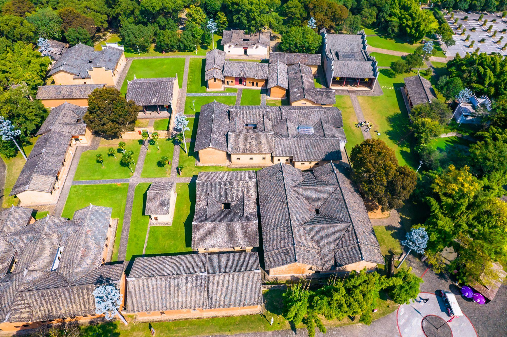
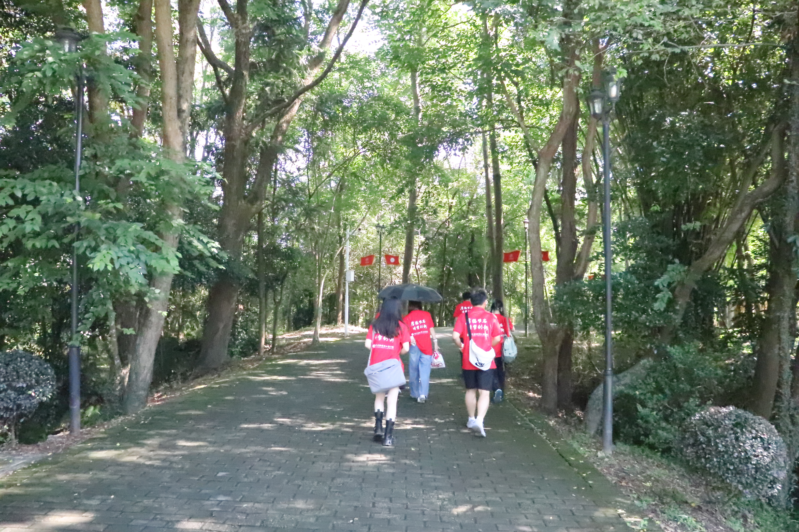
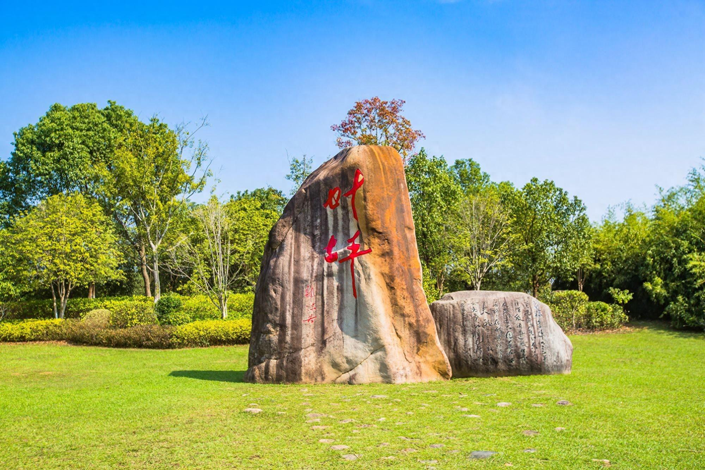
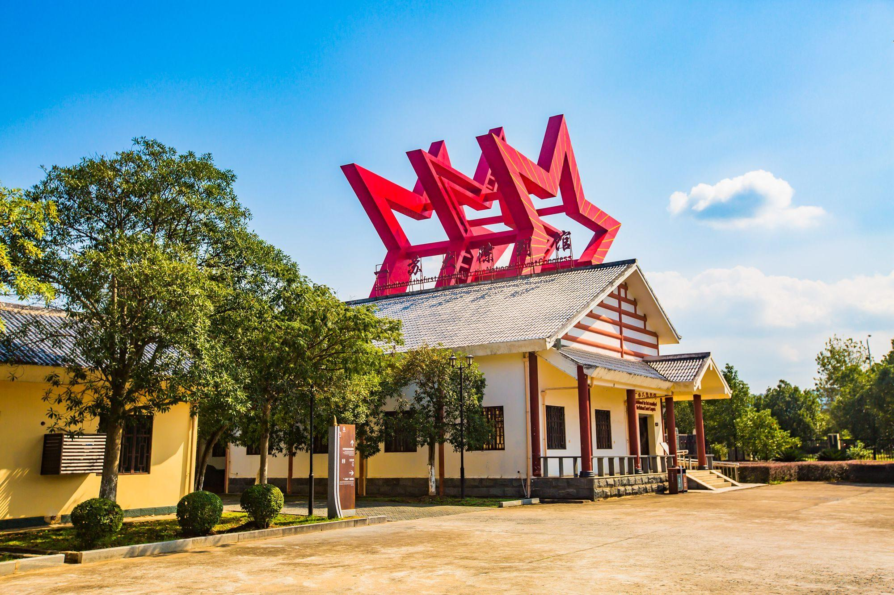
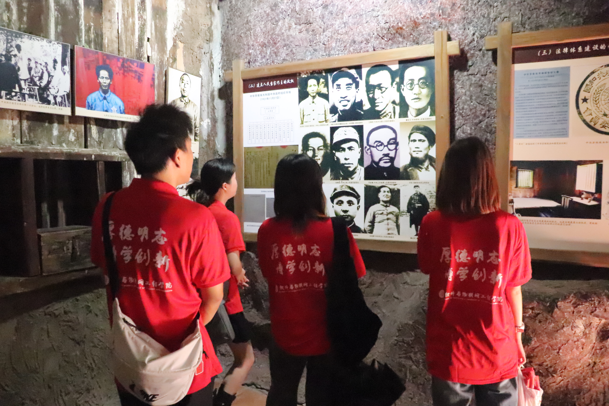
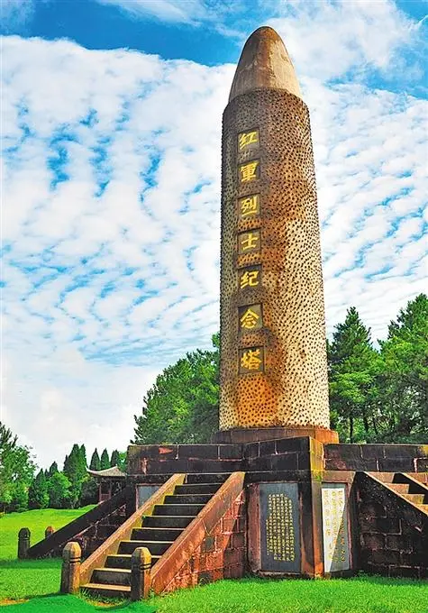
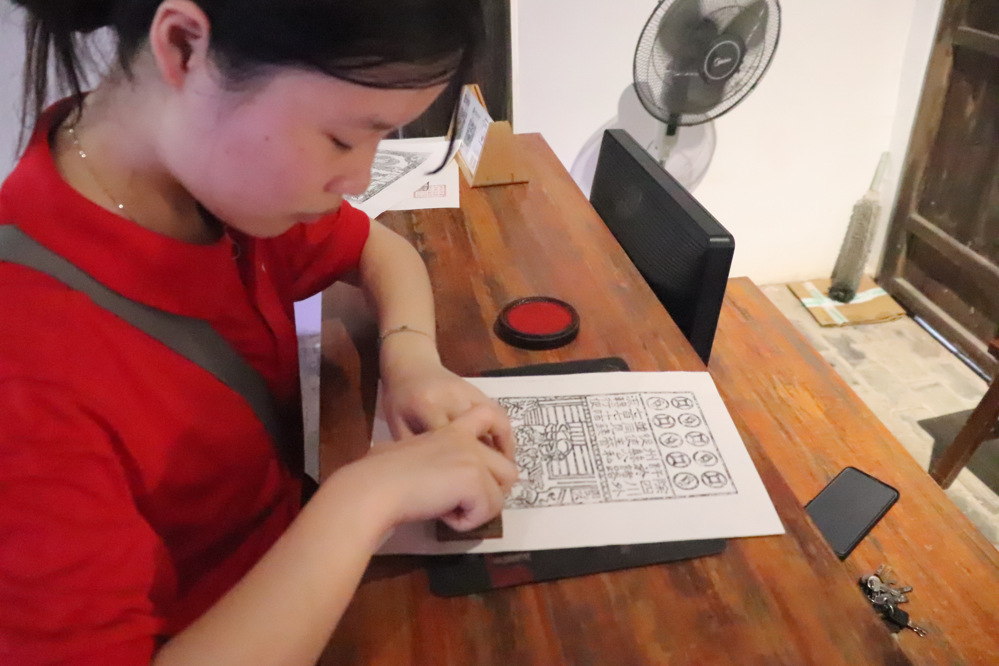
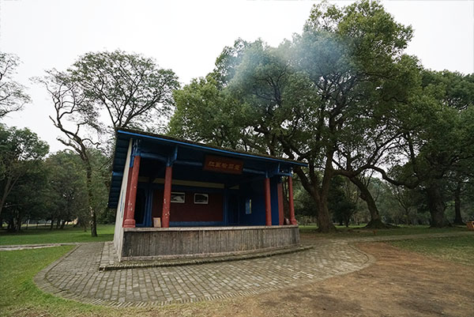
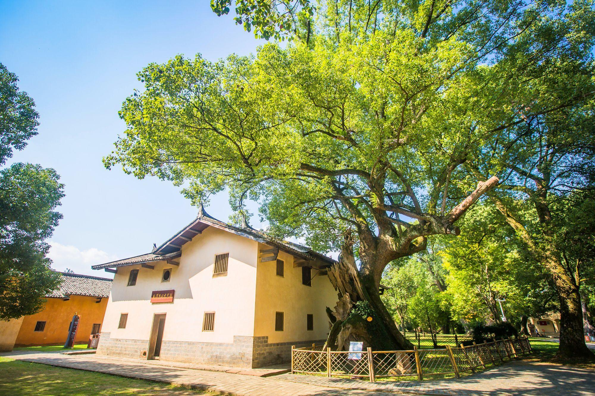

叶坪红色旅游景区
微风轻拂，绿荫浓密，阳光轻洒于土黄泥墙、斑驳瓦片，辉煌中沉淀着历史。

穿梭于绿荫路中，与参天古树一起呼吸，向上生长，向下扎根。

绿荫路尽头，阳光点缀下，镌刻于泰山石上的“叶坪”二字光鲜夺人。

未走进景区，已远远看到一苏大陈列馆旁伫立的立体五角星雕塑，在蓝天白云的衬托下格外醒目。

陈列馆面积不大，馆内布展得相当有沉浸感，人们在粗大古树雕塑下漫步，边走边看，对叶坪的历史便有了一个大致了解。之后再去各旧址参观游览，心里会有一个更清晰深刻的认识。


沿着石子路踱步向前，可以看见中华苏维埃共和国临时中央政府旧址、红军烈士
纪念塔、中央印刷厂旧址、红军检阅台等主要景点。
临时中央政府旧址高校红色走读团队合影

中央印刷厂旧址内高校红色走读团队成员体验印刷

红军检阅台

一棵高大古老的香樟树伫立在伟人故居旁，由于它的存在，卡住了将要爆炸的炮弹，这使它成为最独一无二的红色香樟树。

瑞金叶坪红色旅游景区，不仅是一片美丽的自然景观，更是一座承载着革命精神的历史丰碑，它让五湖四海的游客沉浸在红色的记忆中，激励着后辈们不断前行。